Gallery
A collection of my favorite artworks I painted over the years in various different media such as oil, watercolor, and gouache. Art keeps me creative and connected to my Indian heritage and culture!
 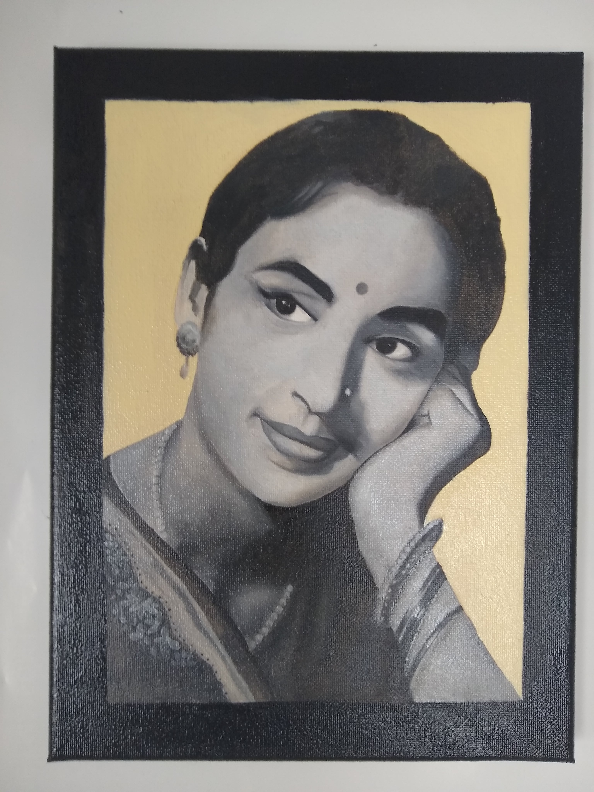
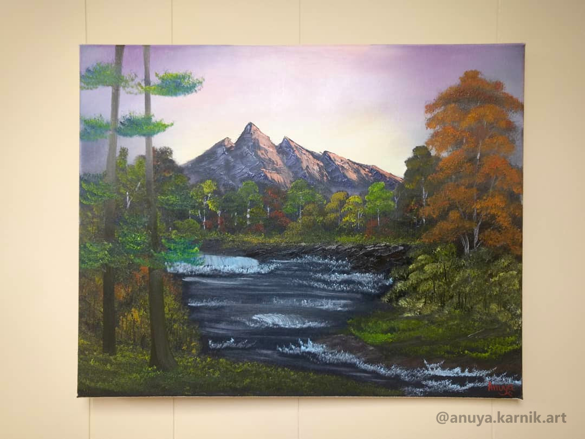
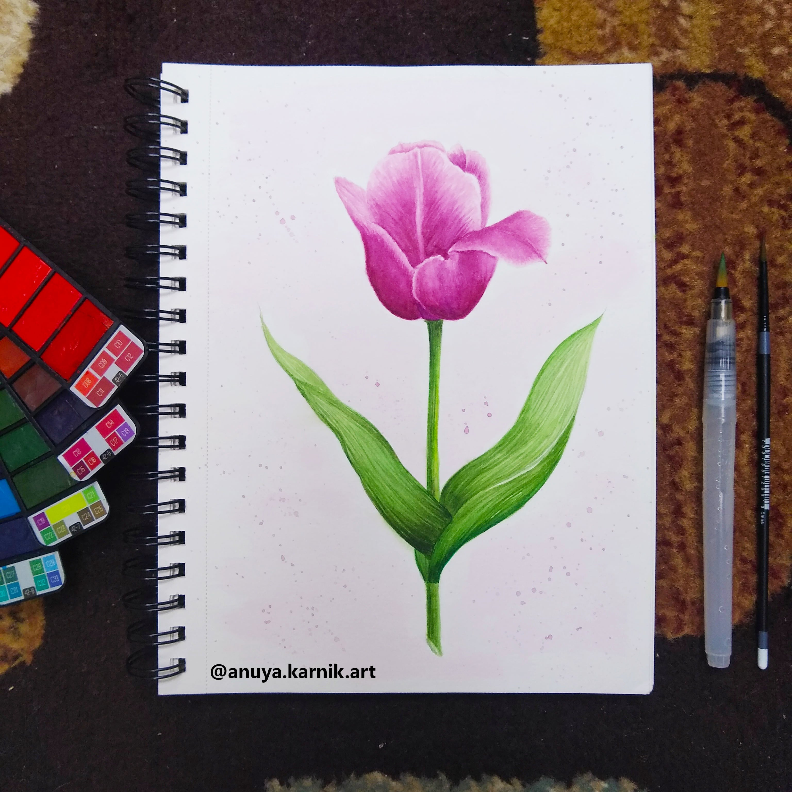
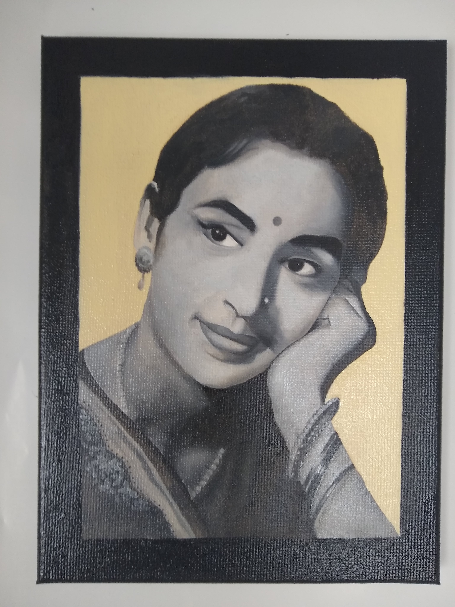
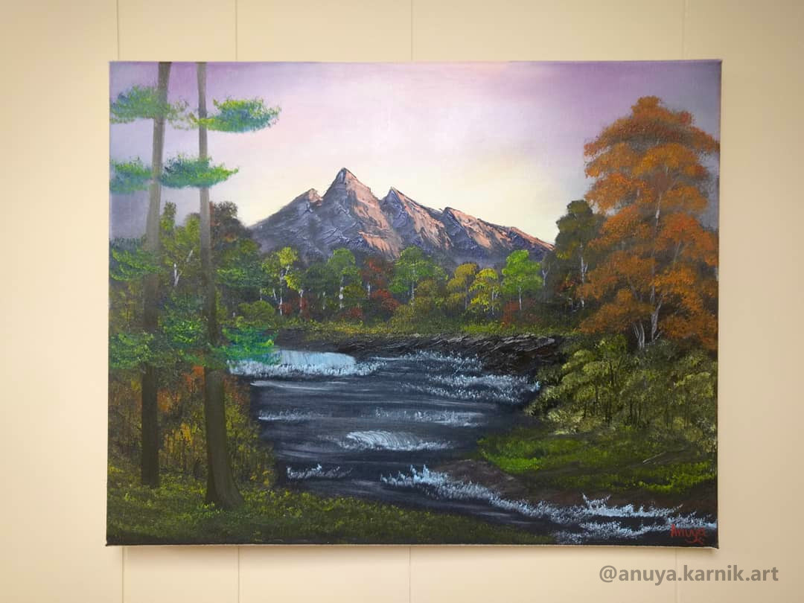
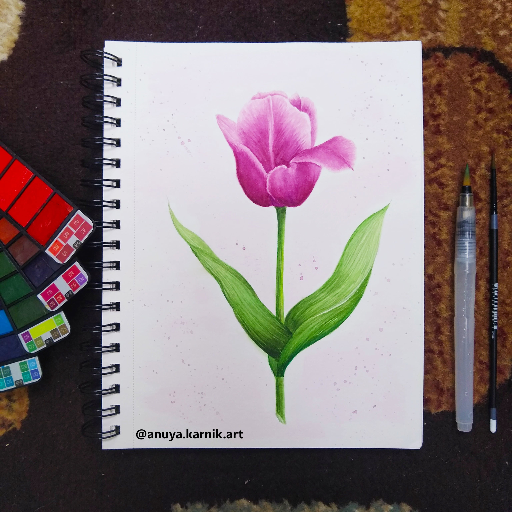
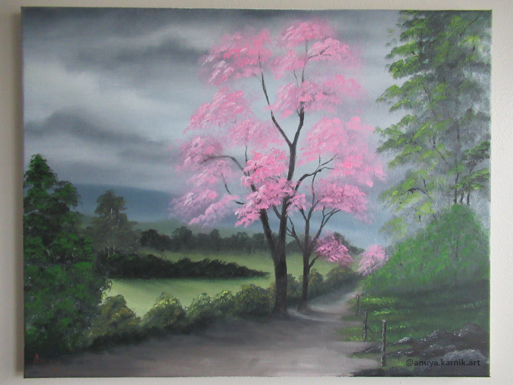
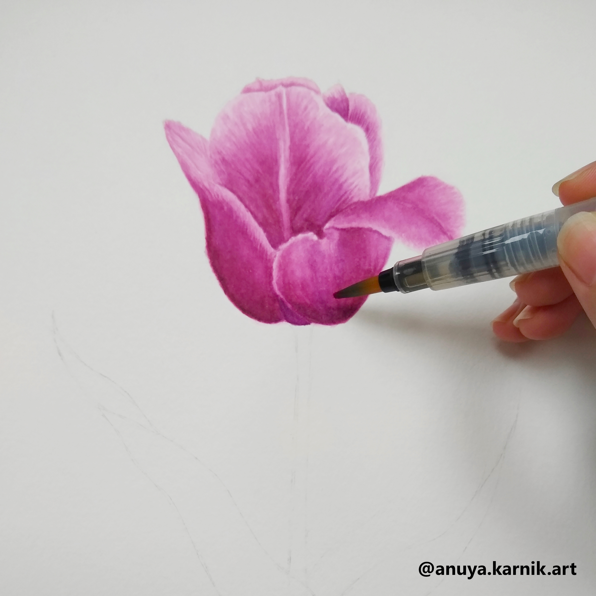


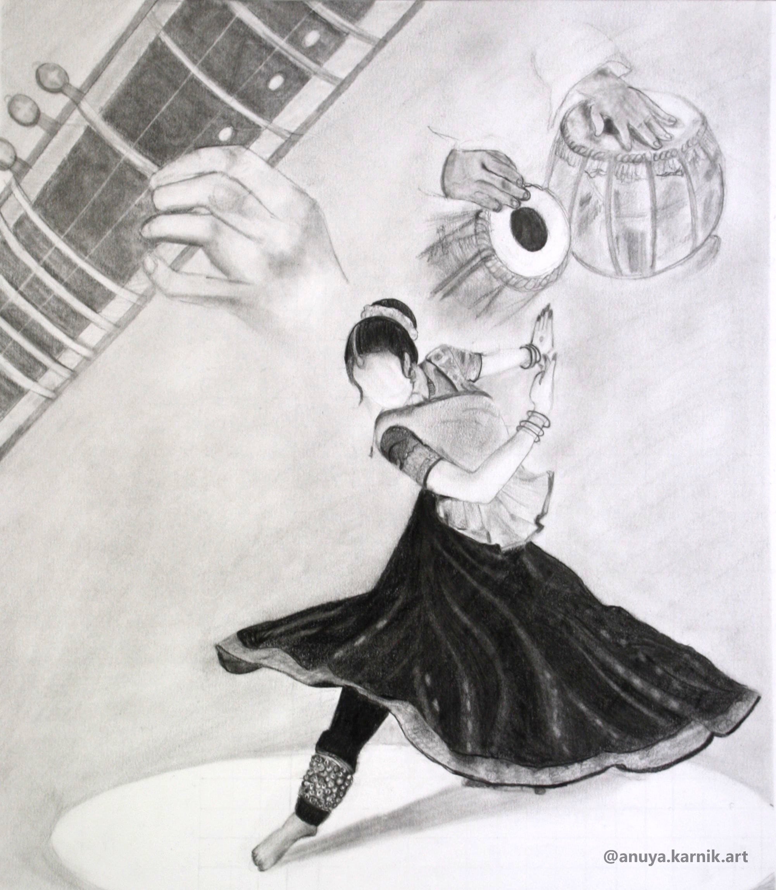
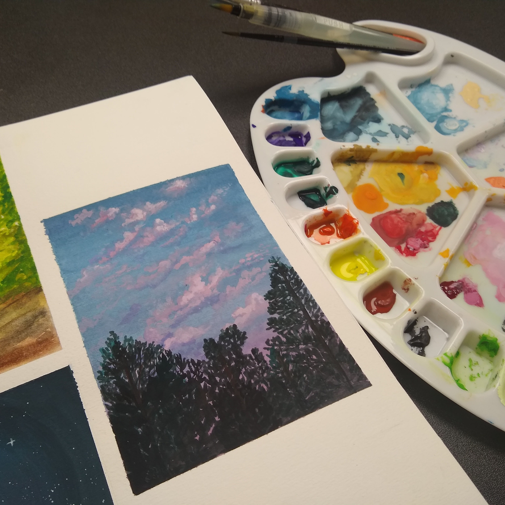
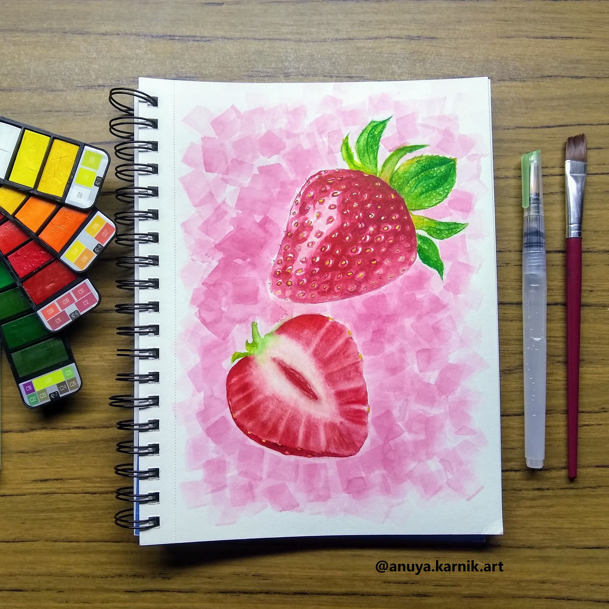
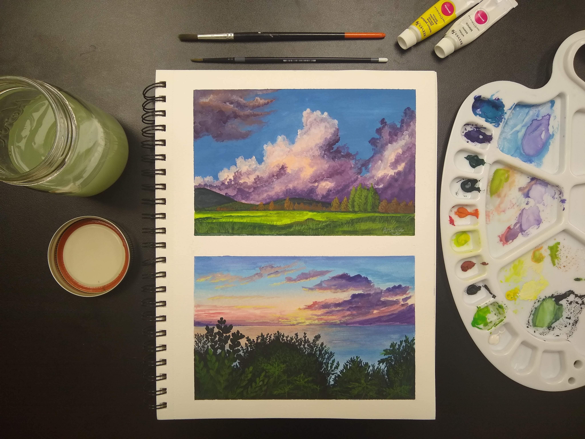